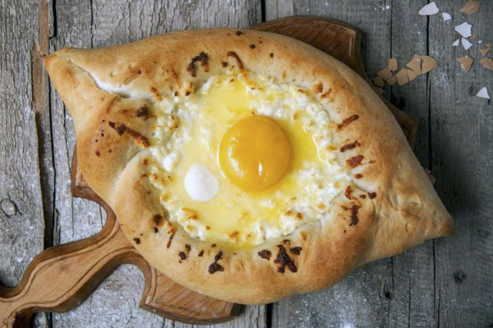

Adjaruli khachapuri is arguably Georgia’s most iconic dish. This eye-shaped, molten cheese bread is one of the most photogenic, decadent and delicious dishes from Georgia and, along with khinkali, is one of the most sought-after and well-known items of Georgian cuisine. And while it is absolutely delicious to go out to a top restaurant in Tbilisi and dig into a freshly made khachapuri, not everyone can get to Georgia and this delicious dish isn’t easy to find outside of this nation in the Caucasus. It is for this reason that I put together this Adjaruli khachapuri recipe so you can make this Georgian delicacy at home!
Adjaruli khachapuri (also referred to as Adjarian khachapuri or Acharuli khachapuri) may look complicated to make, however, I assure you that it is actually fairly simple and only requires a handful of ingredients. Not only is it relatively easy to make, but it is also lots of fun! So if you want to travel to Georgia without leaving your own kitchen, make sure to check out this Adjarian khachapuri recipe — you won’t be sorry.
Before I dive headfirst into the khachapuri recipe, we need to talk about what this amazing Georgian cheese bread is! Well, there are actually many variations of khachapuri that you can find throughout Georgia and they all hail from their own particular region of this small nation.
The most well-known (and decadent) of the khachapuris, however, is Adjaruli khachapuri, which hails from the Adjara region in western Georgia — where the coastal city of Batumi is. This is the most distinctive khachapuri and is notable for its boat shape and egg yolk that gives it the look of a cheesy, eggy eye.
While there are lots of different kinds of khachapuris available in Georgia, the two other most common that you will find (aside from Adjarian khachapuri) are khachapuri Imeruli and khachapuri Megruli. The former comes from the Imereti region around Kutaisi and the latter hails from the Samegrelo region near Zugdidi.
These two khachapuris differ from Adjaruli khachapuri in the fact that they are circular breads that are fully stuffed with cheese. They aren’t open like the Adjarian khachapuri. Imeruli khachapuri is my personal favourite and the easiest on your stomach and it is simply a circular cheese-stuffed bread. Megruli khachapuri is similar to Imeruli khachapuri except that it is also topped with cheese along with it being stuffed.
The main takeaway with any kind of khachapuri is that Georgians aren’t shy with the cheese — and neither should you be!
*If you cannot find Imeruli or sulguni cheese, substitute an equal amount of feta for Imeruli and low-moisture, whole milk mozzarella for the sulguni
Return to Main Page